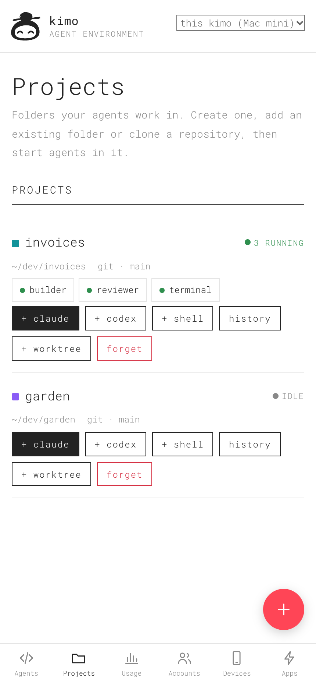
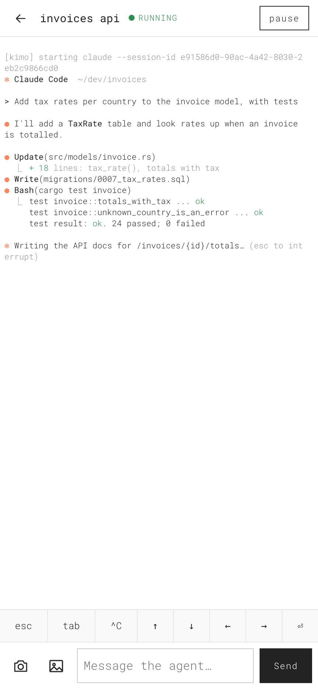

01 What runs where
kimo is a mobile-first agent development environment written in Rust. A server on your Mac or Linux computer runs Claude Code, Codex and shell sessions. Your phone or tablet connects to that server through kimo’s progressive web app (PWA). The native window and command line are clients of the same API.
Your selected host owns the project folders, processes, builds and available hardware. A phone connection does not move that work onto the phone. Pair several computers to reach their projects while keeping each project on its original host.
| Component | Where it lives | What it does |
|---|---|---|
| kimo server | Your Mac or Linux host | Owns projects, sessions, accounts, resources and the API. |
| Agent CLIs | The selected host | Run with that host’s tools, files and user permissions. |
| Phone PWA | Your phone or tablet | Creates projects, directs agents and displays their output. |
| Native window / CLI | A computer | Provides another way to control the server and paired hosts. |
| This website | GitHub Pages | Introduces and documents kimo. Your working PWA is served by your own host. |
There is no mandatory project format, editor or file browser. Projects are ordinary folders. kimo’s internal state lives outside them, in its own data directory.
02 Install & start
Before you begin
- A macOS or Linux computer, on Apple silicon / ARM64 or Intel / x86_64.
- Claude Code, Codex, or both, installed and authenticated on that computer. kimo uses your existing provider access; it does not include a provider subscription.
- The development tools your project needs on the host: for example Git, Node.js, Python or Rust. GPU work also needs the host’s appropriate drivers and tools.
- A reachable network between your phone and host, such as your LAN, Tailscale or ZeroTier.
Install a release
Run this on the computer that will do the work. The installer downloads the release for its operating system and architecture into ~/.local/bin.
curl -fsSL https://raw.githubusercontent.com/vallverdu/kimo/main/install.sh | shcurl -fsSL https://raw.githubusercontent.com/vallverdu/kimo/main/install.sh | sh -s -- --serverIf your shell cannot find kimo, add ~/.local/bin to its PATH, or run ~/.local/bin/kimo directly. On macOS the installer also sets up kimo.app in Applications, or your user Applications folder.
Build from source
Use Rust stable. Cargo installs into ~/.cargo/bin by default.
# Native window and server
cargo install --git https://github.com/vallverdu/kimo kimo
# Server only, without desktop features
cargo install --git https://github.com/vallverdu/kimo kimo --no-default-featuresOn Linux, building the native window also needs the X11/Wayland development libraries listed in the contributing guide. The server-only build avoids the desktop feature set.
Start the host
kimo serveRun kimo instead to open the native window and start the background server when needed. The default port is 7777. Closing the native window leaves the background server and agents running. If you launched kimo serve in a terminal, keep it running or configure a user service.
03 Connect your phone
- Start kimo on the host and make sure an agent CLI is signed in there.
- On the host, run
kimo pair, or open Devices in kimo. - Choose an address your phone can reach: Wi-Fi/LAN, Tailscale or ZeroTier. Scan the QR code or open that address and enter the pairing code.
- The code is valid for ten minutes and is used once. If it expires, create a fresh code. Typed codes accept case differences, spaces and dashes.
- Check the host shown in the PWA’s header before creating anything.
Pairing gives this device its own revocable owner key. Revoke a device from Devices if it should no longer control the host.
Install the PWA
iPhone / iPad: open the host’s address in Safari, choose Share → Add to Home Screen, then open kimo from the home screen. The installed app keeps separate browser storage, so enter a fresh pairing code there if needed.
Android: installation needs HTTPS. For a configured Tailscale host, Devices offers HTTPS setup through tailscale serve. Open the HTTPS address and use the browser’s install action. Pair the installed app if it does not already have a device key.
Your first project from a phone
- Open Projects → + and choose a new project.
- Enter its name and create it. The folder is created on the selected host, under its configured projects directory unless you choose another location.
- Choose + claude or + codex under that project. New sessions use the provider’s active account.
- Send an initial task through the message field, for example “Build a small invoice PWA with line items, totals and a print view.”
- Review output, answer the agent’s questions and ask it to test or publish when ready. Publishing uses tools and credentials available on the host.
Project creation, agent launch and the first message are currently separate steps. A combined guided flow is still planned.


These captures illustrate the workflow; they do not establish real-device acceptance.
04 Projects & worktrees
A project points to a folder on a host. Create a new folder, add an existing one or clone a Git repository. Clone progress appears in a terminal, so authentication prompts and failures stay visible.
Adding a folder can find its latest Claude Code and Codex conversations and continue them as sessions. Reopening an already registered project reuses it. Earlier conversations remain available through the project’s history.
Give parallel work its own branch
Use a project’s worktree action to create a Git worktree with an agent. Each worktree has its own folder and branch while sharing the repository’s history. kimo-managed worktrees live under ~/.kimo/worktrees/<repository>/<branch>.
Removing a worktree is refused while agents run there or the worktree has uncommitted changes. The branch remains after removal. Choosing a worktree base branch and creating a pull request directly from that flow are still planned; agents can use the host’s ordinary Git tools.
The native window also accepts dropped project folders. Use ⌘B to toggle the projects panel and ⌘T for a terminal in the current project.
05 Agents & conversations
A session is a terminal running Claude Code, Codex or a shell, with a working directory and, for agents, an account. Several sessions can belong to the same project.
| Indicator | Meaning | Your next step |
|---|---|---|
| Working | The running agent is doing work. | Read progress or send direction when appropriate. |
| Needs you / waiting | The agent needs an answer or approval. | Open it and decide what to do. |
| Idle | The running session is at its prompt. | Read its reply and give another task. |
| Paused | The process is suspended and still occupies memory. | Resume it to continue execution. |
| Stopped / exited | The process is no longer running. | Inspect the result, or start a resumable agent again. |
kimo’s session ID identifies the terminal for messages and API calls. Its resume / conversation ID identifies the provider conversation. Continuing an agent uses that conversation, rather than asking you to reconstruct its chat.
Use the terminal from your phone
Read the live terminal, type a message and use the key bar for keys such as Escape, Tab, Ctrl+C and arrows. The phone client can upload photos or files to the host for an agent; uploaded files are stored under kimo’s data directory, and their paths can be sent to the agent.
Disconnecting versus stopping
A client disconnect does not tell the server to stop the session. On terminal reconnect, kimo replays recent output from a bounded buffer. Your provider’s conversation history is separate from that terminal buffer.
A server restart is different: kimo still owns the PTYs, so uninterrupted process survival across server restarts is unfinished. Resumable agents can restart into their conversations, but an in-flight build or shell job is not restored by its chat history. See updates before restarting during active work.
06 Paired computers
Run kimo on each computer. On the computer to add, create a pairing code with kimo pair. In the other kimo, open Devices → Other kimos and enter that address and code. Pairing lets the two machines learn about one another.
kimo peers
kimo peer add http://HOST:7777 PAIRING-CODE
kimo agents
kimo send gpu-lab/trainer-1a2b "Report the training progress"Use the host switcher in the phone’s header or native projects panel. Creating a project, starting a terminal and sending a message act on that selected host. A project on a Linux GPU computer stays there when you continue it from a Mac.
Give hosts clear names through KIMO_NAME or --name. Agent IDs from another computer use host/id. If automatic address discovery chooses an unreachable return address, the CLI supports --my-url when pairing.
Reaching paired hosts through /api/hosts/… is owner-only. A normal scoped app key does not gain peer-forwarding access; a custom app can connect to hosts directly with an appropriate key for each one.
07 Accounts & usage
Sign in once, then choose an account
kimo lists the host’s own provider login and can keep additional Claude Code or Codex accounts in isolated configuration homes. Add and authenticate an account through Accounts / Subscriptions. Initial provider authentication and switching an already authenticated account are separate operations.
Choose one active account per provider for new sessions. A session can also switch to another account of the same provider. Moving running sessions restarts their processes and continues each session’s own conversation ID; it is not a switch between Claude and Codex histories.
Codex’s initial sign-in currently needs a browser on the host. Phone-friendly Codex setup and exhausted-limit recovery are still being developed. Real-provider switching with both providers remains an acceptance check; existing automated process tests are not a substitute for that verification.
Understand the usage views
Usage groups agent conversations by day, project or repository, account and model, including conversations on the host outside kimo. It reads provider logs. Cost figures are estimates in US dollars at API list prices, not your actual subscription bill.
Plan windows show known usage, reset times and pace projections when available. Codex limits come from its logs. Claude plan limits use Claude’s usage API when enabled; expired credentials or unavailable data can leave them missing. A projection describes the current pace, not a guaranteed exhaustion time.
kimo usage --days 14
kimo usage --days 14 --json08 Resources & recovery
kimo reports host memory, its own overhead and agent resource use separately. An agent’s process tree can include MCP servers, compilers and development servers; the memory breakdown helps identify which child process is using resources.
| Action | CPU | Memory | Continuation |
|---|---|---|---|
| Pause | Suspends execution | Remains allocated | Resume the same suspended process. |
| Stop | Ends the session’s processes | Releases their memory | A resumable agent starts into its saved conversation later. |
| Close a client | Host work continues | Remains allocated | Reconnect to the running server. |
The memory warning in the PWA offers a way to stop eligible idle agents. Automatic recovery is configurable: under critical pressure, it can stop idle resumable Claude Code and Codex sessions, largest first. An optional idle timer can do the same after a period of inactivity. Opening a freed agent starts it into its conversation again.
A shell does not have a provider conversation to resume. Stopping a shell or a build inside it does not preserve that process’s execution state. Pausing does not solve memory pressure.
Keep-awake controls have three modes: off, while agents work, or on. Support uses caffeinate on macOS and systemd-inhibit on Linux. The ports view helps find a development server running on the host; a listening port still needs to be reachable from your client’s network.
09 Skills, settings & updates
Skills
The skills service can list skills and install them from a GitHub repository path, a Git URL or a folder. Scope can be shared or project-specific. Managed skills are read-only; removing an installed skill moves it to kimo’s skill backups.
Install the bundled kimo-agents skill to teach agents how to list, message, wait for and read other agents. It tells them to leave approvals and agents that need human input to you. See the collaboration commands.
Settings
Settings cover agent enablement, models, extra arguments and permissions; terminal font size; quick commands; appearance; update policy; keep-awake mode and memory recovery. Manual permissions keep the agent’s approval flow. The “skip every prompt” / yolo choice changes how the agent asks for permission; agents still run with your host user’s access.
The API and native window provide more settings and skills controls than the current phone client. Completing the phone controls is still planned. A server capability does not mean the corresponding phone screen is complete.
Updates and process continuity
kimo checks GitHub releases and can notify, install a compatible release and restart into it. Automatic updates can wait until no agent is working. Source builds or unwritable install locations may require a manual update; the update response explains why.
Before restarting, finish or save important shell jobs and builds. Resumable agent conversations can continue after the restart, but the current server does not preserve every running process uninterrupted. The detached PTY holder needed for that is unfinished.
10 Build your own app
The PWA, native window and CLI use the same HTTP API. A custom dashboard, PWA or team interface can create projects, start agents, send tasks, observe changes and embed a terminal through the JavaScript SDK served by your host.
Create an app key
- As an owner, open Apps in the PWA, or call
POST /api/clients. - Give the app a name, its allowed browser origins and either
readorcontrolscope. - Save the returned key when it is shown. Use that app key in your client; keep owner tokens out of ordinary app frontends.
- Revoke the key from Apps or through the owner API when it is no longer needed.
| Caller | Access | Boundaries |
|---|---|---|
| Owner | Local machine requests when enabled, paired devices/kimos, or KIMO_TOKEN | Full control of the host, including terminals and account administration. |
| Read app | Permitted GET endpoints and live events | No terminal WebSocket or folder listing. Owner-only routes remain blocked. |
| Control app | Projects, sessions, messages, terminals and account switching | No owner-only account setup, keys, devices, peers, settings or skill changes. |
Browser origins include scheme, host and port, without a path: for example https://my-app.example. A GitHub Pages repository path is not a separate origin from other paths on the same hostname. Scope limits operations; it is not a per-project file sandbox.
Create a project and direct an agent
Use this in a JavaScript module. Replace both host URLs and the key with your host and a control app key that permits your app’s origin. It creates a real folder and agent when run against your host.
import { Kimo } from 'https://YOUR-HOST/sdk/kimo.js';
const kimo = new Kimo({
url: 'https://YOUR-HOST',
token: 'YOUR_APP_KEY'
});
const { project } = await kimo.createProject({
mode: 'new', name: 'my-next-idea', git: true
});
const agent = await kimo.createSession({
name: 'builder', kind: 'claude', cwd: project.path
});
await kimo.send(agent.id, 'Build an invoice PWA with tests.');
const state = await kimo.waitFor(
agent.id, ['idle', 'waiting'], { timeout: 120000 }
);
console.log(state.status, state.activity);
console.log((await kimo.reply(agent.id)).text);waitFor resolves when the agent is no longer working, including a request for input or a stopped/exited session. It does not prove the task succeeded. Inspect the state and reply. Its timeout is in milliseconds; catch errors in your app and present them to the user.
Live events and terminals
const unsubscribe = kimo.subscribe(
({ sessions, accounts }) => console.log(sessions, accounts),
() => console.log('Connection interrupted')
);
// When this view is disposed:
// unsubscribe();Import the terminal component, add a <kimo-terminal> element with a visible height, then assign the client and session ID from the example above:
import 'https://YOUR-HOST/sdk/kimo-terminal.js';
const terminal = document.querySelector('kimo-terminal');
terminal.style.height = '24rem';
terminal.kimo = kimo;
terminal.setAttribute('session', agent.id);The component follows the page’s light/dark scheme and --color-* design tokens. Its readonly attribute disables local input, but a terminal connection still requires a control or owner key: a read key cannot open it.
For an owner client, kimo.forHost(host) creates a client routed to a paired host, and kimo.useHost(host) changes the selected host. Peer enumeration and forwarding remain owner-only. Ordinary apps should connect to each host directly with a suitable scoped key.
See the complete agent-board example and the SDK source.
11 HTTP API
API paths begin with /api. Send JSON request bodies and Authorization: Bearer YOUR_KEY. WebSockets and EventSource can use the SDK’s token-bearing URLs when request headers are unavailable. API failures use { "error": "plain words" }.
curl -H "Authorization: Bearer $KIMO_APP_KEY" \
http://HOST:7777/api/sessionsThe route guide below groups the public surface. For full request/response fields, use the repository’s API, SDK and CLI reference. Access restrictions from the previous section apply to every group.
Projects, folders and conversations
| Method | Path after /api | Purpose |
|---|---|---|
| GET / POST | /projects | List; create {mode, name?, path?, git?, url?}. Modes: new, existing, clone. |
| PATCH / DELETE | /projects/{id} | Change name/colour; forget while retaining project files. |
| POST / DELETE | /projects/{id}/worktrees | Create {name, agent?}; remove with ?path=. |
| GET / POST | /fs | Browse with ?path=; create {parent, name}. Not available to read keys. |
| GET | /conversations?path= | Earlier provider conversations in a folder. |
| POST | /conversations/continue | Continue {agent, cwd, id, name?, start?}. |
Sessions, messages, files and live output
| Method | Path after /api | Purpose |
|---|---|---|
| GET / POST | /sessions | List; create {name, kind, cwd?, account?, args?, command?, start?}. |
| GET / DELETE | /sessions/{id} | Read one session; stop and remove it. |
| POST | /sessions/{id}/action | {action: start | pause | resume | stop | restart}. |
| POST | /sessions/{id}/account | Switch account and continue the conversation. |
| POST | /sessions/{id}/message | Send {text, from?} as a signed message. |
| GET | /sessions/{id}/reply | Last answer: {source, text}. |
| GET | /sessions/{id}/screen?lines=40 | Recent terminal text without escape codes. |
| POST | /sessions/{id}/input | Raw terminal input: {text}. |
| POST | /sessions/{id}/files | Upload {name, data}, base64, up to 20 MB; returns a host path. |
| WebSocket | /sessions/{id}/term | Binary terminal frames; JSON resize messages. Replays recent output. |
| GET / SSE | /events | update events containing sessions and accounts, including periodic usage updates. |
Session fields separate process status from running-agent activity. IDs can also be a unique prefix or session name; host/id identifies a remote session.
Accounts, subscriptions and usage
| Method | Path after /api | Purpose |
|---|---|---|
| GET / POST | /accounts | List accounts; owner creates {name, provider}. |
| DELETE | /accounts/{id} | Owner removes an unused account. |
| POST | /accounts/{id}/login | Owner starts its authentication terminal. |
| POST | /accounts/active | Set {provider, account, move?} for new sessions; optionally move existing ones. |
| POST | /accounts/{id}/move | Move sessions with {to}. |
| GET | /usage | Account use, known plan limits, resets and pace. |
| GET | /usage/daily?days=30 | Usage by date, place, account and model; estimated API cost. |
Host resources and recovery
| Method | Path after /api | Purpose |
|---|---|---|
| GET | /status | Host identity, version and resource summary. |
| GET | /memory | Pressure, eligible idle/heavy agents and recovery history. |
| POST | /memory/free | Stop eligible idle resumable agents; returns stopped IDs. |
| GET | /sessions/{id}/memory | Memory by process tree, including child tools. |
| GET | /ports | Owner inspects listening ports and associated processes/sessions. |
| GET / POST | /awake | Owner reads or changes {mode: off | agents | on}. |
Pairing, networks and peer hosts — owner administration
| Method | Path after /api | Purpose |
|---|---|---|
| POST | /pairing | Create a one-time pairing code. |
| POST | /pair | Exchange {code, name} for a device key. The code is the proof; no prior key is needed. |
| GET / DELETE | /devices / /devices/{id} | List paired devices; revoke one. |
| GET | /network / /qr?text= | Reachable addresses and network hints; QR as SVG. |
| POST | /network/https | Set up HTTPS through Tailscale. |
| GET / POST | /peers | List paired hosts; add {url, code, my_url?}. |
| DELETE | /peers/{id} | Forget a peer. |
| GET / POST | /peers/keys / /peers/accept | Owner peer-key access; peer pairing handshake. |
| Forwarded | /hosts/{host}/… | Route API, events and terminals to the chosen peer. Owner-only. |
Apps, skills, settings and updates
| Method | Path after /api | Purpose |
|---|---|---|
| GET / POST | /clients | Owner lists or creates {name, origins, scope} app keys. |
| DELETE | /clients/{id} | Owner revokes an app key. |
| GET / PUT | /settings | Owner reads or saves agent, UI, update and resource settings. |
| GET | /agents | Installed provider CLIs and known versions. |
| GET / POST / DELETE | /skills | List with ?project=; owner installs from a source or removes with ?path=. |
| POST | /skills/kimo | Owner installs the bundled collaboration skill. |
| GET / POST | /update | Owner checks release state or installs an update. |
| POST | /update/restart | Owner restarts on the installed version. |
12 CLI reference
The command line is an API client. Inside a kimo session, KIMO_URL and KIMO_SESSION point it at the right server and identify the sender. A command targeting another agent can use its ID, name or unique ID prefix.
| Command | Use |
|---|---|
kimo / kimo app | Open the native window. |
kimo serve | Run the server without a window. |
kimo pair | Show a QR and pairing code. |
kimo install-app | Set up the macOS application bundle. |
kimo agents [--json] | List local and paired agents, status and resume IDs. |
kimo new <claude|codex|shell> | Start a session. Options: --name, --cwd, --account, --prompt. |
kimo send <id> <message…> | Send a signed message. |
kimo read <id> [--screen] [--lines N] | Read the last reply, or recent terminal screen. |
kimo wait <id> [--timeout S] | Wait until not working. Timeout is in seconds; default 900. |
kimo whoami | Show the current kimo session identity. |
kimo history [folder] | Find earlier provider conversations. |
kimo continue <conversation> [--folder DIR] | Continue a selected conversation. |
kimo usage [--days 14] [--json] | Inspect usage for this host. |
kimo peers | List paired computers. |
kimo peer add <url> <code> [--my-url URL] | Pair with another host. |
kimo peer remove <id> | Forget a peer. |
kimo --help / kimo --version | Inspect the installed binary’s own options and version. |
Ask another agent to review
kimo new claude --name reviewer --prompt "Review src/parser.rs and report problems"
kimo wait reviewer --timeout 900
kimo read reviewer
kimo send reviewer "Focus on malformed input and error messages"A wait ending can mean idle, stopped or needs input; it is not a success verdict. Read the answer. Do not send messages into another agent’s human approval prompt or approve on someone else’s behalf. The bundled skill documents that collaboration pattern.
13 Configuration & services
Flags override their environment fallbacks. Server options such as --bind, --name and --projects-dir go before the subcommand.
kimo --bind tailscale --name studio --projects-dir ~/dev serve| Variable | Default | Purpose |
|---|---|---|
KIMO_BIND | all | Listen on all, localhost, tailscale, zerotier or an IP. |
KIMO_PORT | 7777 | HTTP/WebSocket server port. |
KIMO_NAME | Hostname | Identity shown to paired kimos. |
KIMO_PROJECTS_DIR | ~/dev | Parent for new projects. |
KIMO_LOCAL_OWNER | true | Treat direct requests from this machine as owner requests. |
KIMO_TOKEN | Unset | Optional owner token for scripts. |
KIMO_DATA_DIR | ~/.kimo | Internal state and account homes. |
KIMO_ORIGINS | Unset | Extra comma-separated browser origins for owner-token access. Normal apps use their own keys. |
KIMO_SCROLLBACK | 262144 | Bytes of recent terminal output kept per session. |
RUST_LOG | Application logging configuration | For example kimo=info or kimo=debug. |
.env.example documents the variables. Set them in the process environment or your service configuration; it is not a project file that you need to add to every repository.
Linux user service
From a checkout of the kimo application, copy the systemd template. Its default executable is ~/.local/bin/kimo; adjust ExecStart for a Cargo install and include your tools in the service’s PATH.
mkdir -p ~/.config/systemd/user
cp contrib/kimo.service ~/.config/systemd/user/
systemctl --user daemon-reload
systemctl --user enable --now kimo
loginctl enable-linger "$USER"
# Follow the service log
journalctl --user -u kimo -fmacOS LaunchAgent
Copy contrib/ai.kimo.plist into ~/Library/LaunchAgents/. Before loading it, edit the executable path: the template uses $HOME/.cargo/bin/kimo, while the release installer normally uses $HOME/.local/bin/kimo. Then load the agent:
launchctl load -w ~/Library/LaunchAgents/ai.kimo.plistThe supplied LaunchAgent starts at login and writes to /tmp/kimo.log. It is not a system daemon that starts before a user signs in. kimo install-app sets up the native app bundle separately.
Data, credentials and access
State is plain JSON at ~/.kimo/state.json by default. Account configuration homes live under ~/.kimo/accounts/; uploads, managed worktrees and backups also belong to kimo’s data directory. Credentials belong in those provider homes, not in project files or Git.
The owner can run terminals as your host user. Owner access includes paired devices/kimos, the optional owner token and direct requests from the machine when local ownership is enabled. On a shared machine, set KIMO_LOCAL_OWNER=false and use explicit device pairing.
Prefer a private network and follow the project’s security model; kimo is not intended to be exposed directly to the public internet. Revoke device, peer and app access when no longer needed.
14 Troubleshooting
My phone cannot reach the host.
Check that the server is running, the address is reachable from the phone’s network and the bind setting is not localhost-only. Use the host’s LAN or private-network address, not the phone’s localhost. Inspect Devices / Network for available addresses and firewall hints. A pairing code alone does not establish reachability.
Pairing works in the browser but the installed PWA asks again.
The installed PWA may have separate browser storage. Open it from the home screen and use a fresh one-time code. Codes expire after ten minutes and cannot be reused after redemption.
The Android install option is missing.
Use the host’s HTTPS address. With Tailscale configured, Devices can set up HTTPS through Tailscale Serve. A normal HTTP LAN page may be reachable without meeting Android’s installation requirements.
macOS asks me to review the downloaded app.
Signed and notarised macOS release builds remain planned. First launch can therefore require a system security confirmation. Check that you obtained the binary from the project’s release or installer, and review the macOS prompt. The host can run with kimo serve without opening the native window.
kimo cannot find Claude Code, Codex or a development tool.
Install it and authenticate on the selected host. A user service may have a different PATH from your interactive shell; update the service environment and restart it when safe. The macOS native app reads the login shell’s PATH, while service templates still need their executable/tool paths checked.
I hit a provider limit. Will kimo switch automatically?
Do not rely on automatic exhausted-limit recovery yet. Choose another already authenticated account of the same provider for the session. Provider sign-in, remaining quota and the conversation’s actual resume result still need to be checked; phone-friendly Codex authentication and limit recovery remain open work.
Plan percentages are missing, or estimated cost differs from my bill.
Claude plan data needs its usage integration and a usable login; Codex limits arrive through its logs. Unknown or expired data can leave percentages absent. Usage costs use API list prices as a reference and do not describe a subscription invoice.
Pausing did not free memory.
Pause leaves the process allocated. Stop an eligible idle resumable agent to release its process memory, then open it to continue the conversation. Inspect the process breakdown for large MCP servers or builds. A stopped shell cannot restore a running job from conversation history.
A peer is offline, or its HTTPS address fails.
Check reachability in both directions and the host names/addresses used for pairing. Use --my-url if the discovered return address is wrong. The current Rust peer client still needs HTTPS/WSS support, even when the phone’s direct HTTPS connection works.
My app gets 401/403 responses or a CORS failure.
Check its key, allowed browser origin and scope. A read key cannot create a project or connect a terminal. A control key still cannot manage owner-only routes such as settings, pairing or peer forwarding. Origins include the scheme and port, so HTTP and HTTPS addresses are different origins.
The terminal is blank, garbled or missing older output.
Check the selected host and session, then reconnect or use redraw where available. Reconnect output is bounded by the server’s scrollback setting. Use project history or the provider transcript for conversation history; it is separate from the terminal replay buffer.
What should I include in a bug report?
Include kimo --version, host OS/architecture, browser/device, whether the host was direct or paired, the provider, and the steps to reproduce. Remove tokens, pairing codes, account credentials and private terminal output. Report security issues privately through the repository’s Security tab rather than a public issue.
15 Status & contributing
This guide was reviewed against the project’s README, API/SDK/CLI reference, configuration, access rules, service templates and product direction on 26 October 2026. It describes the implemented interfaces and the remaining work known at that review; check the installed binary’s help and the current repository when versions differ.
The main priorities are completing and verifying the phone-to-host journey, continuity across devices and accounts, useful resource recovery and the shared API/SDK.
- Real iOS/Android checks of creating a project, directing and publishing work, sleep/reconnect and continuing through a peer remain open.
- Fresh-project setup still needs a combined agent/account/initial-task flow.
- Rust peer HTTPS/WSS support, mobile settings/skills controls and phone-friendly Codex setup remain unfinished.
- Both real providers still need account-switch and exhausted-limit recovery acceptance checks.
- Representative host measurements and real-phone memory recovery checks remain to be recorded.
- A detached PTY holder is still needed for uninterrupted session processes across server restarts.
Browser-emulated screenshots and automated fake-agent/two-server tests are useful evidence for their specific checks. They do not establish that every phone, provider and paired-host scenario has passed.
Contribute
Use issues for reproducible bugs and proposals, and read CONTRIBUTING.md before a code change. Shared capabilities belong in the API and SDK, with the PWA and native window as clients. Keep projects as ordinary folders and the core small.
Application changes require cargo fmt, cargo clippy --all-targets -- -D warnings and cargo test; shared/server work must also preserve cargo build --no-default-features. Record what was actually checked on devices and providers.
kimo is licensed under MIT OR Apache-2.0. Its providers and their CLIs have their own terms. See the project’s current roadmap and release notes for changes after this review.